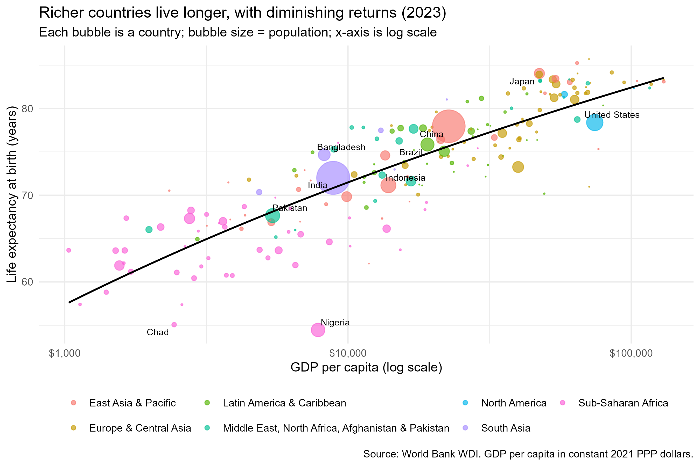
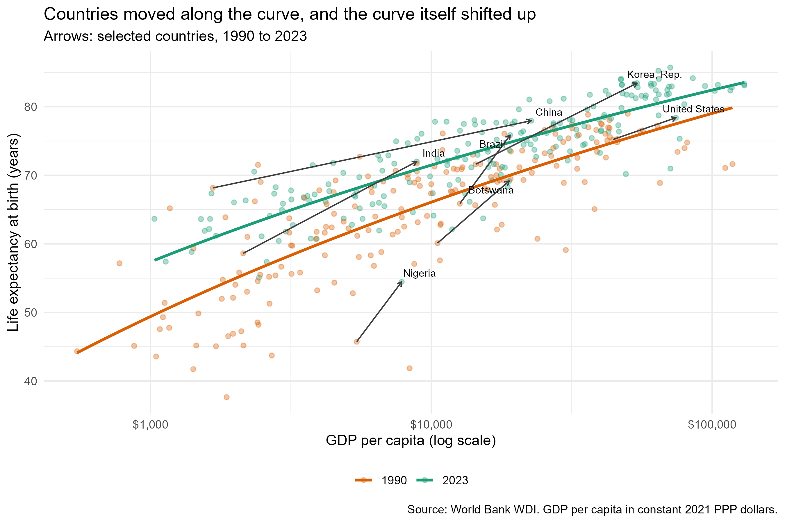
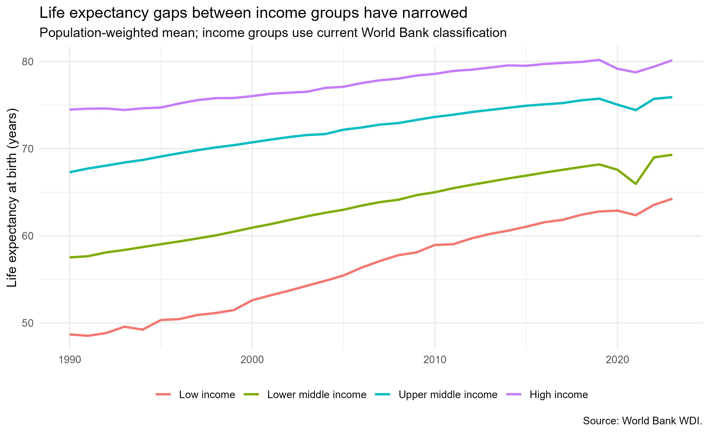

Does Money Buy Years? Income and Life Expectancy Around the World, 1990 to 2023
Question and motivation
Richer countries tend to have healthier populations. But how tight is that link, does it flatten out at high incomes, and have poor countries been catching up with rich ones? These questions matter for policy. If life expectancy depends mainly on income, then economic growth is the main route to better health. If instead the whole relationship shifts over time (through vaccines, sanitation, cheap medicines), then health can improve even where growth is slow.
The cross-country relationship between income and life expectancy is called the Preston curve. I use it to ask: how has the link between income and life expectancy changed between 1990 and 2023, and have poorer countries caught up?
Data
All data come from the World Bank’s World Development Indicators (WDI) and are downloaded programmatically with the R package WDI (code/01_get_data.R):
- GDP per capita, PPP, constant 2021 international dollars. Dividing by population removes the effect of country size; PPP adjusts for differences in price levels across countries; using constant dollars removes inflation so that 1990 and 2023 are comparable.
- Life expectancy at birth (years).
- Population, used for bubble sizes and population-weighted averages.
I drop World Bank aggregates (e.g., “World,” regional groupings) and keep country-years with all three variables. The sample has 185 countries in 1990 and 197 in 2023; the 184 countries present in both years are used when I follow countries over time. GDP is plotted on a log scale because an extra $1,000 matters far more to a country with $2,000 per person than one with $60,000. Accordingly, I model life expectancy as a linear function of log income.
Figure 1: The cross-section in 2023
Life expectancy rises steeply with income at the low end and more gently at the top. Countries below about $5,000 per person range from the mid-50s to the low 70s in life expectancy, while countries above \(50,000 are mostly in the high 70s and 80s. In a regression of life expectancy on log GDP per capita, **doubling income is associated with about 3.7 additional years of life**, and income alone accounts for roughly 74% of the cross-country variation in life expectancy (\)R^2$ = 0.74).
That leaves a lot unexplained. Nigeria, for example, lies about 15 years below the fitted line, the largest negative gap in the sample, while its income per person (about $7,843) is similar to India’s, where life expectancy is 72.0 years versus Nigeria’s 54.5. The United States sits below the line too: it is among the richest countries, but its life expectancy (78.4) is lower than that of many poorer countries. So income matters, but it is not destiny. This is a correlation, not a causal effect, and health also affects income.
Figure 2: The curve has shifted up

Figure 2 plots 1990 (orange) and 2023 (green) together. Two things stand out.
1. The whole curve moved up. At the same income, countries live longer today. A country with $1,000 per person would have been predicted to have a life expectancy of 50.8 years in 1990 but 59.0 years in 2023, a shift of 8.2 years. At $5,000 the shift is 6.3 years and at $50,000 it is 3.6 years. The upward shift is largest for the poorest countries, which suggests that improvements in health technology and public health have benefited low-income countries the most. Among the 184 countries observed in both years, the average gain in life expectancy was 8.6 years, and 99% of countries improved.
2. The curve became flatter and tighter. The slope fell from 4.5 years per doubling of income in 1990 to 3.7 years in 2023, and the \(R^2\) rose from 0.64 to 0.74. The same income gap now translates into a smaller life-expectancy gap.
The arrows show that individual countries moved both right (growth) and up (health), but not equally. India went from 58.6 to 72.0 years as income per person rose from $2,140 to $8,871. China rose from 68.2 to 78.0 years while income grew more than ten-fold. Korea went from 71.6 to 83.4. In contrast, the United States gained only 3.2 years even though income rose by about 68%, and Nigeria’s life expectancy (45.7 to 54.5) remains the lowest among the countries I highlight even though its income increased. Within this period, growth and health gains are clearly linked but not mechanically.
Figure 3: Have income groups converged?

Population-weighted life expectancy rose in all four income groups, and the poorer groups gained the most: 15.6 years in low-income countries, 11.8 in lower-middle-income, 8.6 in upper-middle-income, and 5.7 in high-income countries. As a result, the gap between high- and low-income countries shrank from 25.8 years in 1990 to 15.9 years in 2023. The gaps are still large, however: people in low-income countries live about 15.9 fewer years than those in high-income countries.
The figure also shows the effect of COVID-19. Between 2019 and 2021, life expectancy fell by 2.2 years in lower-middle-income countries, 1.4 years in high-income countries and 1.3 years in upper-middle-income countries, and low-income countries saw a small decline. By 2023, all four groups were at or above their 2019 levels, so the pandemic interrupted but did not reverse the long-run convergence.
Takeaway
Income and life expectancy are strongly and non-linearly related: each doubling of income is associated with about 3.7 more years of life in 2023, and gains are largest at low incomes. But income is not the whole story. Since 1990, the entire curve has shifted upward (by about 8.2 years for the poorest countries versus 3.6 years for the richest), the relationship between income and life expectancy has become flatter, and the high-to-low-income gap fell by about 9.9 years. Poor countries have therefore caught up substantially in health, even though a large gap remains.
For policy, this suggests that low-cost health improvements (vaccines, sanitation, basic care) can raise life expectancy even where income growth is slow, while economic growth still matters, particularly at low income levels. Outliers like Nigeria show that income alone does not determine health outcomes.
Limitations. The analysis is descriptive, not causal. Income groups use the World Bank’s current classification, so a country that became richer is counted in the high-income group for all years. The sample of countries differs slightly between 1990 and 2023 (185 vs. 197). Finally, national averages hide differences within countries.
Reproducibility
All code is in the GitHub repository. Run code/run_all.R and then render this file; see the README for details. Every number in the text above is computed from the data when the document is rendered.